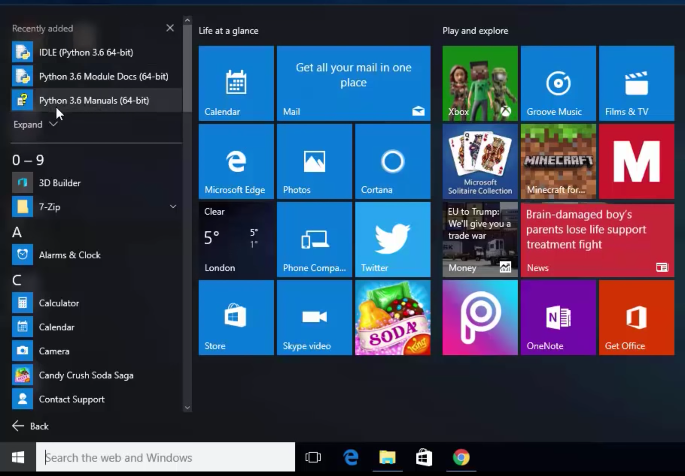
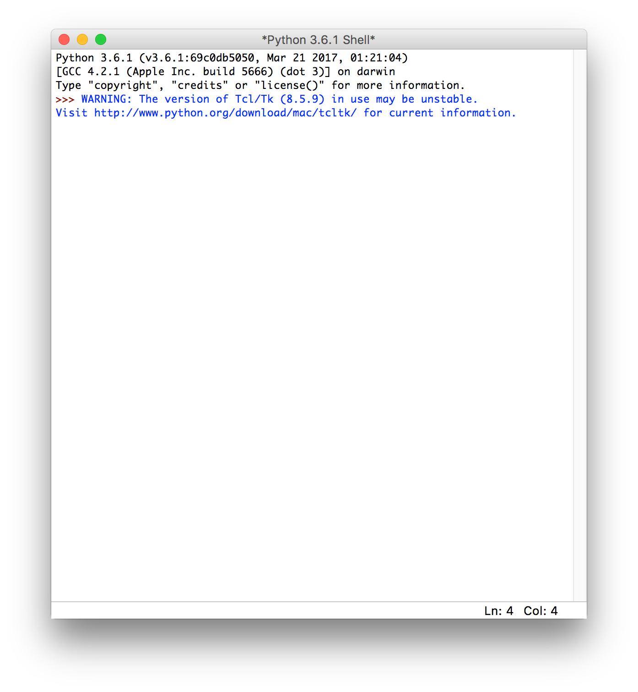

Find a python 3 package suitable for your computer
here. The
installation instructions are included in the installer. If you have a Chromebook, you will have to use
trinket.io.
You will need to sign up for an account.
Check if python is installed
Windows
Python should be in the windows menu under python3.x (x will be the version).

Mac
Open launchpad and see if there is an app named "IDLE." In the top right the version should be there. Here I
have Python 3.6.1.

Chromebook
That's it!